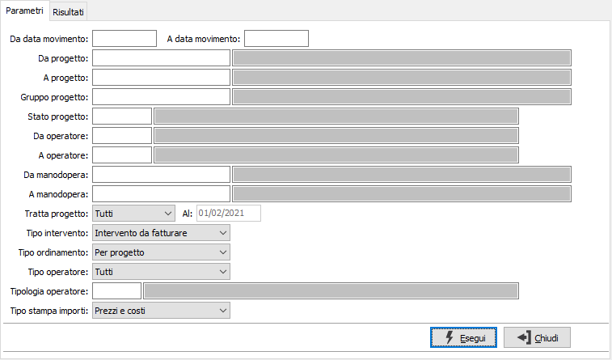
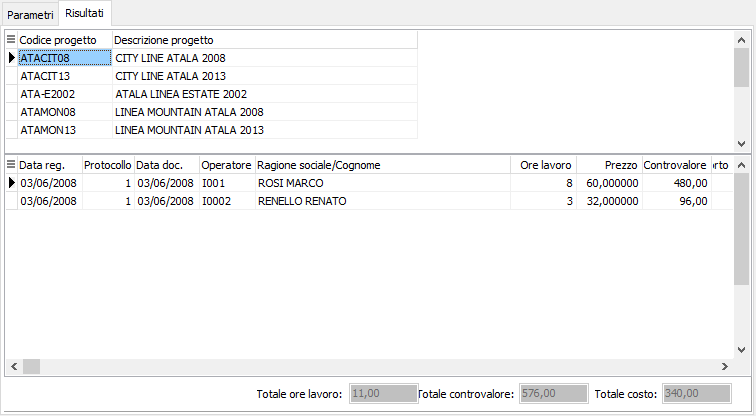

Analisi manodopera
Il programma effettua l’analisi degli interventi effettuata in base ai parametri inseriti dall’utente. Una volta visualizzati i movimenti, è possibile attivare la stampa utilizzando il bottone Anteprima/Stampa della tool bar.
Il programma si articola su due sezioni video. La prima, Parametri, consente la definizione dei parametri di analisi.

DA DATA MOVIMENTO: eventuale data da cui deve iniziare l’analisi dei movimenti di manodopera. Confermando a vuoto, l’analisi inizia con il primo movimento valido.
A DATA MOVIMENTO: eventuale data con cui si desidera terminare l’analisi dei movimenti di manodopera. Confermando a vuoto, l’analisi si conclude con l'ultimo movimento valido.
DA PROGETTO: eventuale codice del progetto, presente in anagrafica Progetti, da cui si desidera iniziare la selezione dei movimenti di manodopera. Confermando a vuoto, la selezione inizia con il primo progetto valido. Sul campo è attiva la ricerca (F9) sull’anagrafica progetti.
A PROGETTO: eventuale codice del progetto, presente in anagrafica Progetti, a cui si desidera terminare la selezione dei movimenti di manodopera. Confermando a vuoto, la selezione termina con l’ultimo valido. Sul campo è attiva la ricerca (F9) sull’anagrafica progetti.
GRUPPO PROGETTO: eventuale codice del gruppo progetto, presente in anagrafica Gruppi progetti, per cui si desidera effettuare la selezione dei movimenti di manodopera. Sul campo è attiva la ricerca (F9) sulla tabella.
STATO PROGETTO: eventuale codice dello stato progetto, dato presente in anagrafica progetti, per cui si desidera effettuare la selezione dei movimenti di manodopera. Sul campo è attiva la ricerca (F9) sulla tabella.
DA OPERATORE: eventuale codice dell’ operatore, presente in anagrafica Operatori, da cui si desidera iniziare la selezione dei movimenti di manodopera. Confermando a vuoto, la selezione inizia con il primo progetto valido. Sul campo è attiva la ricerca (F9) sull’anagrafica progetti.
A OPERATORE: eventuale codice dell’ operatore, presente in anagrafica Operatori, a cui si desidera terminare la selezione dei movimenti di manodopera. Confermando a vuoto, la selezione termina con l’ultimo valido. Sul campo è attiva la ricerca (F9) sull’anagrafica progetti.
DA MANODOPERA: eventuale codice manodopera, presente in anagrafica Articoli, da cui si desidera iniziare la selezione dei movimenti di manodopera. Confermando a vuoto, la selezione inizia con la prima manodopera valida. Sul campo è attiva la ricerca (F9) sull’anagrafica prodotti.
A MANODOPERA: eventuale codice manodopera, presente in anagrafica Articoli, a cui si desidera terminare la selezione dei movimenti di manodopera. Confermando a vuoto, la selezione termina con l’ultimo valido. Sul campo è attiva la ricerca (F9) sull’anagrafica prodotti.
TIPO INTERVENTO: combo box per definire il tipo di intervento che desideriamo analizzare. Valori ammessi: intervento da fatturare; solo contratto di manutenzione; tutti.
TIPO ORDINAMENTO: combo box per definire il tipo di ordinamento che si desidera utilizzare. Valori ammessi: per progetto; per operatore.
TIPO OPERATORE: combo box per definire il tipo di intervento che desideriamo analizzare. Valori ammessi: tutti; interno; esterno.
TIPOLOGIA OPERATORE: eventuale codice della tipologia operatore per cui si desidera effettuare la selezione degli operatori. Sul campo è attiva le funzioni di ricerca (F9) sulla tabella stessa.
TIPO STAMPA IMPORTI: combo box per definire il tipo di importi che si desidera stampare. Valori ammessi: prezzi e costi; solo prezzi; solo costi; nessuno.
La seconda sezione, Risultati, visualizza i risultati dell’analisi, riportando i dati suddivisi in due griglie; la prima, in alto, contiene le informazioni in base al tipo di raggruppamento scelto (progetto o articolo); la seconda, in basso, contiene il dettaglio dei movimenti. Utilizzando il doppio click sulla griglia si accede alla visualizzazione del documento indicato.
